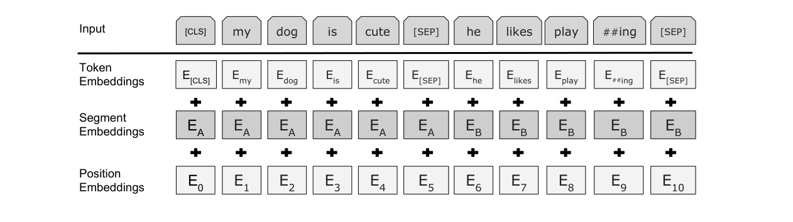
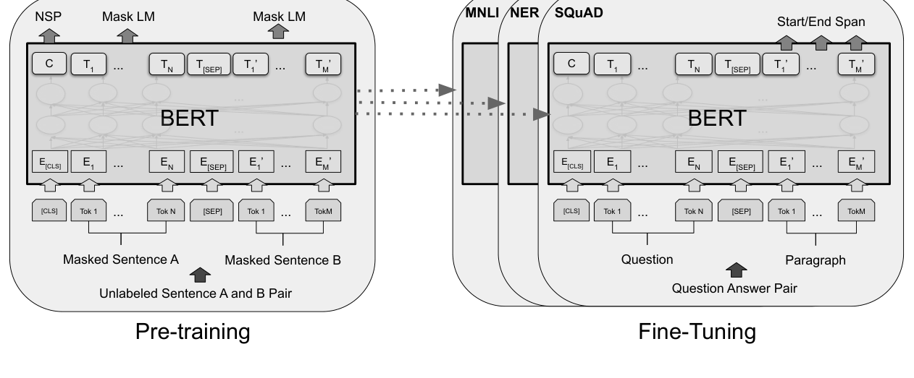
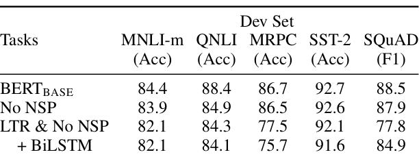

盖住一个词，让它根据左右两边填回来
Devlin 等人 2018 年在 Google 写的《BERT: Pre-training of Deep Bidirectional Transformers for Language Understanding》。GPT 式的「先预训练再微调」只能从左往右读。BERT 把训练任务从「猜下一个词」改成「完形填空」：随机盖住 15% 的词，让模型根据左右两边把它填回来，于是每个词在每一层都能同时看到两侧。架构就是 004 的编码器叠 12 或 24 层，真正的新东西是训练任务。同一个预训练模型，只加一个输出层，就刷新了 11 项任务的最好成绩。
- 正文只走一条线：单向读有什么毛病 → 为什么不能直接改双向 → 用完形填空绕开 → 怎么接到各种任务上 → 每个结论对应哪个实验。只读每节标题和每段第一句，也能串起来。
- 公式、符号表、各任务和指标的解释、完整结果表、训练设置、概念注解、当时的背景，都在页尾的附录里，默认折叠，标明对应原文第几节。
- 小数字例子都验算过：为讲解设定的标「示意」，按原文规格估算的标「推算」。
- 模型的零件（自注意力、多头、残差）在 004 Transformer 讲过；「先预训练再微调」的范式在 006 GPT-1 讲过，本篇是它的双向版。
1要解决的问题：只能单向读
到 2018 年，「先在没人标过的文字上预训练，再迁到具体任务」已经行得通。迁移有两条路：ELMo 把预训练好的向量当特征，喂给各个任务自己设计的模型；GPT（006）把整个预训练模型拿来微调，只加一个很小的输出层。本文走 GPT 这条路。但这两条路的预训练目标都是传统语言模型，只能单向读：从左往右，或从右往左。
毛病一：每个词的表示，看不到另一边
单向读，一个词的表示只由它一侧的词算出。「I went to the bank to deposit money」里，读到 bank 时只看左边的「I went to the」，既可能是河岸，也可能是银行。真正消歧的是右边的「deposit money」。
这对句子整体的分类影响不大，对要给每个词一个好表示的任务影响最大，比如问答要判断「段落里这个词是不是答案」，需要同时融合问题和它后面的上下文。原文说，单向对这类词级任务「可能非常有害」。
毛病二：想改成双向，直接做不行
传统语言模型的任务是「根据上文猜下一个词」。如果让模型也能看右边，答案就在输入里。多层网络里更糟：就算在输入层把要猜的词挡住，别的位置也会先把它吸收进自己的向量，再传回来。
003 里的双向 RNN 没有这个问题，因为它读的是翻译的源句，输出是另一种语言的词，没人要求它预测自己。BERT 面对的是没有标注的文字，答案只能是文字本身，一旦预测的就是输入，就会泄漏。
ELMo 的折衷：左右各训一个，最后拼接
ELMo 的做法是训两个独立的 LSTM，一个从左往右，一个从右往左，各自都不看自己，用的时候把两个向量拼起来。每个词的表示里有了两边的信息，但两个方向从没有交流过，原文称为「浅层」双向。
所以问题归结成一句：要想让单个模型每层都双向，就得换一个训练目标，让被预测的词不在输入里。这就是下一节。
2第一步：把「猜下一个词」改成完形填空
做法很直接：随机选出序列里 15% 的词元（WordPiece 切出来的小片段）盖住，让模型根据整条序列，把被盖住的原词填回来。损失只算这 15% 的位置，其余位置不计。被盖住的词不在输入里，就没有「绕回自己」的路，所以可以放心用 004 编码器里没有掩码的全双向自注意力。
为什么这样就行：要填对，就必须用上被盖住位置左右两边的词，这就是「双向的训练信号」。只盖一部分，其余位置仍然完整，模型也能顺带学到语法、搭配、指代。原文在这里的话是「直觉上，深度双向模型严格强于从左到右、或左右各训一个再拼接的模型」，这是前提假设，第 5 节用实验来验证。损失的精确写法见附录 A 式 1。对着第 1 节的两个毛病：被预测的词不在输入里，所以能放心双向。
补丁：被选中的词，不全换成 [MASK]
还有一个麻烦：预训练时输入里有 [MASK]，微调和实际使用时一个 [MASK] 都没有，两边不一致。作者的办法是，选中的 15% 位置里，80% 换成 [MASK]，10% 换成一个随机词，10% 原样保留。三种情况都要把原词填回来。
作者的解释（附录 A.1）：编码器不知道哪些词要预测、哪些词被随机换掉了，所以被迫对每个输入词都保持一个结合了上下文的表示。如果总是 [MASK]，模型只需在见到 [MASK] 时动脑，微调时没有 [MASK]，每个词却都要有好表示。算一下：序列长 512，选中约 76.8 个，[MASK] 约 61.4 个，随机和不变各约 7.7 个；随机替换只占全部词元的 1.5%，原文认为不会损害语言理解。
原文的 Table 8 做了验证：微调时几乎没差别，特征式 NER 里全用 [MASK] 掉到 94.0，BERT 的组合是 94.9，差 0.9（全部数字见附录 F）。这些都是开发集上零点几分的差距，我只当趋势看。对着毛病：预训练和微调的输入不一致。「10% 保持不变」会不会又回到「看见自己」，我放在附录 B 里解释。
3第二步：一条序列放一句或两句
下游任务有的只有一句（情感分类），有的是两句（推理的前提和假设，问答的问题和段落）。BERT 把它们统一成一种输入：[CLS] 句子 A [SEP] 句子 B [SEP]。[CLS] 放最前面，它最后一层的向量被当作整条序列的汇总；[SEP] 是分隔符。每个位置的输入向量是三种嵌入相加：词元嵌入 + 段嵌入（属于 A 还是 B）+ 位置嵌入。位置嵌入和 004 的 sin/cos 不同，是像词向量一样学出来的，最长 512。

两句拼成一条序列还有一个好处：自注意力从第 1 层起，A 句的每个词就能直接看 B 句的每个词。原文说这实际上就包含了两句之间的双向交叉注意力，不用像以前那样先分别编码两个文本。
再加一个任务：下一句预测
完形填空只让模型学词和上下文的关系，没有直接学两句话之间的关系，而问答、推理恰恰依赖它。所以预训练里加了第二个任务 NSP：给每个样本选句子 A 和 B，50% 的时候 B 是 A 在原文里真正的下一句（IsNext），50% 的时候 B 是语料里随机抽的一句（NotNext）。用 [CLS] 的最终向量做二分类。训练数据从任何单语语料都能自动造出来。
原文说这个任务虽然简单，但对问答和推理都有益，证据是第 5 节 Table 5 里「去掉 NSP」那一行。我补充的：NotNext 的句子是随机抽的，话题往往完全不同，模型可能只靠「话题是否相近」就判对，不一定真学到了逻辑连贯。原文没有分析这一点。后来的研究对 NSP 是否必要，结论也不一样，见第 6 节。对着毛病：完形填空管不到句子之间的关系。
4第三步：微调，一个模型接所有任务
预训练做完，接任务就很简单：按上一节的格式放入输入，顶上只加一个小输出层，所有参数一起继续训练。每个任务得到一个独立的微调模型，但它们都从同一份预训练参数出发。原文强调的特色是：预训练架构和最终下游架构之间的差异极小。

微调很便宜：原文说所有结果在单个 Cloud TPU 上最多 1 小时、GPU 上几小时就能复现。昂贵的是预训练：BERT-BASE 用 4 个 Cloud TPU（共 16 块芯片）、LARGE 用 16 个（共 64 块）各训 4 天。我补充的：代码和预训练模型都开源了，别人就只用付微调的钱，这是 BERT 能迅速普及的现实原因。
两个尺寸分别是 BASE（12 层、隐藏维度 768、12 个头，约 1.1 亿参数）和 LARGE（24 层、1024、16 个头，约 3.4 亿）。BASE 是特意定成和 GPT 一样大的，为了做第 5 节的受控对比。对着毛病：不用为每个任务再设计专用架构。精确的符号写法见附录 A。
5证据：它到底做到了多少
三个问题：刷新了多少成绩？功劳是不是真在双向？模型越大是不是越好？每个结论紧跟着证明它的那个实验。
刷新了 11 项任务
先看 GLUE（8 个句子级任务的合集，测试集，由评测服务器打分）。平均分：BERT-BASE 79.6，BERT-LARGE 82.1，GPT 75.1，ELMo 那一行 71.0，此前最好 74.0（Average 排除了有问题的 WNLI，所以和官方得分略有不同）。LARGE 比 GPT 高 7.0，BASE 高 4.5。官方排行榜上，BERT-LARGE 得分 80.5，GPT 为 72.8（撰文时）。
这是预训练价值最直观的体现：数据少时，从预训练里「借」来的知识比任务本身的数据更重要。这个「为什么」是我的解读，原文只陈述现象。BERT-LARGE 在小数据集上微调有时不稳定，作者做了多次随机重启、按开发集挑最好的；GLUE 测试标签不公开，每个模型只向评测服务器提交了一次。
另外三项，都是测试集成绩（SQuAD 的 F1 是答案和标准答案的词重合程度，EM 是一字不差）：
| 任务 | BERT | 对照 |
|---|---|---|
| SQuAD v1.1（F1） | 93.2 | 榜首 nlnet 集成 91.7；人类 91.2。BERT 是集成 + TriviaQA 增广，EM 87.4 |
| SQuAD v2.0（F1，可能无答案） | 83.1 | 此前最好 78.0（高 5.1）；人类 89.5。BERT-LARGE 单模型，没用 TriviaQA |
| SWAG（准确率） | 86.3 | GPT 78.0；ESIM+ELMo 59.2；人类专家 85.0、5 人标注 88.0（只测了 100 个样本） |
SQuAD v1.1 上，单个 BERT 的 F1（91.8）就超过了榜上的顶尖集成系统。「超过人类」只是在这个数据集的测量方式下，不表示一般意义上超过人。到这里为止，BERT 比 GPT 好是事实，但 BERT 和 GPT 除了方向，数据量、批大小、微调学习率也不一样（附录 E），所以 Table 1 说不清功劳属于谁。真正干净的比较在下一小节。
功劳在双向：同数据、同设置，只换预训练任务
Table 5 是全文最重要的一张表：预训练数据、微调方案、超参数都和 BERT-BASE 一样，只换预训练任务。「从左到右、无 NSP」相当于 GPT 的做法。

三件事。一，去掉 NSP，QNLI 掉 3.5（88.4 到 84.9），MNLI 掉 0.5，SQuAD 掉 0.6，MRPC、SST-2 几乎没变。QNLI 是「句子里有没有问题的答案」，掉得最多，符合 NSP 训练的是句对关系。二，换成从左到右，所有任务都不如双向的 MLM，MRPC 掉 9.0（86.5 到 77.5），SQuAD 掉 10.1（87.9 到 77.8）。原文的理由：LTR 模型的词元级隐藏状态没有右侧上下文，做 SQuAD 当然差。SST-2 几乎不掉，这是我的推测：单句情感分类用句子最后一个词的向量就够了，它已经读过整句，而 SQuAD 要求每个词的向量都含全局信息。原文没讨论这一点。三，给 LTR 补救一下，微调时加一个随机初始化的 BiLSTM，SQuAD 回升到 84.9，仍低于 87.9，GLUE 任务反而更差。含义：右边的信息不能在微调阶段补上去，要在预训练阶段就让每一层都融合双向。
要提醒的一点：ELMo 式（左右各训一个再拼接）作者没有做实验，只列了三条理由（附录 B）。所以「深度双向严格强于浅层拼接」这个论点，在 Table 5 里是没有被直接验证的（我的提醒）。
模型越大越好，小任务也受益
从最小到最大：MNLI 77.9 到 86.6，MRPC 79.8 到 87.8，SST-2 88.4 到 93.7，没有一处下降。关键是 MRPC：只有约 3,600 条标注，任务又和预训练任务差得很远，仍随模型变大一路上升。原文称，这是第一项令人信服地证明「预训练得足够充分，扩到极端规模也会让很小的任务大幅提升」的工作。
原文的解释是个假说（原文用的是「我们推测」）：前人对 ELMo 加层、加宽，下游好坏参半，但那些是特征式；微调式只加极少的随机初始化参数，所以即使任务数据很少，也能受益于更大的预训练表示。这个假说没有被直接检验。
两种用法都行：特征式的 NER
最后，BERT 不微调也行。在 CoNLL-2003 NER 上，微调 BASE 的开发集 F1 是 96.4，特征式最好的一种（取最后四层的拼接，不微调，喂给一个两层 BiLSTM）是 96.1，只差 0.3。只用嵌入层（还没经过任何注意力层）只有 91.0，说明提升来自 12 层自注意力带来的上下文化（我的解读）。测试集上 BERT-LARGE 微调是 92.8，ELMo 92.2、CVT 92.6、CSE 93.1，BERT 在这里只是「有竞争力」。NER 不在「11 项任务」里，这 11 项是 8 个 GLUE 任务加 SQuAD v1.1、v2.0 和 SWAG。
原文的结论：深度双向是 BERT 最主要的贡献，同一个预训练模型加一个输出层，就能在句子级和词元级的许多任务上取得最好成绩，而且连很小的任务也受益于规模。
6局限和后来
- 作者承认的：[MASK] 的不一致只是缓解，没消除；完形填空每条样本只在 15% 的位置上学习，收敛更慢（附录 C.1 的实验显示它在准确率上几乎立刻就超过了从左到右的模型）；BERT-LARGE 小数据微调不稳定，要多次重启；每个任务仍要单独微调出一个模型。
- 我补充的：这个架构天生不适合生成文本，双向编码器没有「一个词一个词往下写」的机制，适合理解类任务。最长 512 个词元。全部是英文、单语的研究型基准。几乎所有消融是单次或 5 次平均、没做显著性检验，零点几分的差距不宜过度解读。
- 后来（我的归纳，细节待核实）：「预训练再微调」成了 NLP 的标准做法，一年内出现一批沿着 BERT 改进的模型（RoBERTa 等）；有后续研究报告去掉 NSP 反而更好，这和 Table 5 并不矛盾，因为 Table 5 说的是本文的设置。之后的大语言模型主要沿 GPT 的单向路线发展（007 GPT-2、011 GPT-3），BERT 类编码器长期用于分类、检索等理解任务；每个任务整体微调的成本，催生了只改少量参数的方法（014 LoRA）。
附录 · 想深入再看
下面每一块都默认折叠，标题里写明了对应的原文章节；正文用不到它们。标「我补充」的，是原文之外我加的说明，标「待核实」的是我没有核对清楚的。
A · 公式和符号表（原文第 3 节、附录 A）
传统语言模型：把一句话的概率拆成逐词猜下一个的乘积（001、002 已讲）。
式 1：完形填空的损失（原文只用文字描述，这是我的写法）：只对被选中的位置取平均。
训练的总损失是 MLM 平均似然和 NSP 平均似然之和（原文附录 A.2）。
式 2：输入向量（原文第 3 节）：
式 3：分类微调（原文 4.1 节）：用 [CLS] 的输出 C，只新增分类矩阵 W，损失为 log(softmax(C·Wᵀ))。
式 4：SQuAD（原文 4.2 节）：词 i 是答案起点的概率，对段落所有词做 softmax；终点同理用 E。
训练目标是正确起点与正确终点的对数似然之和。SQuAD v2.0（原文 4.3 节）：无答案当作起点和终点都在 [CLS] 的片段，无答案分 snull = S·C + E·C，最优非空片段分记为 ŝ，当 ŝ > snull + τ 时才预测有答案，τ 在开发集上选使 F1 最高的值。
| 符号 | 是什么 |
|---|---|
| L、H、A | 层数、隐藏维度、注意力头数 |
| Ti | 第 i 个位置最后一层的输出向量；C 是 [CLS] 位置的输出 |
| M | 被选中去预测的位置集合，约占 15% |
| K | 分类任务的类别数 |
| S、E | SQuAD 微调时新增的起点向量和终点向量，各 H 维 |
| τ | SQuAD v2.0 里判断有无答案的阈值 |
GELU（原文附录 A.2，沿用 GPT）：GELU(x) = x·Φ(x)，Φ 是标准正态分布的累积分布函数。示意：GELU(1) = 1 × 0.841 = 0.841；GELU(−1) = −1 × 0.159 = −0.159；GELU(−2) ≈ −2 × 0.023 = −0.046；GELU(0) = 0。负值不是全砍，而是被平滑压小；ReLU 则直接砍成 0。作者没有单独对比过 GELU 和 ReLU。
B · 概念注解和几处细节（原文第 1、2、3、5 节）
预训练、自监督，特征式和微调式。预训练是在大量无标注数据上用「答案就在文本里」的任务训练（自监督）。迁移到任务有两种用法：
| 特征式（ELMo） | 微调式（GPT、BERT） | |
|---|---|---|
| 怎么用 | 当特征提取器，向量喂给任务专门设计的模型 | 预训练模型就是任务模型的主体，顶上加极少新参数 |
| 预训练参数 | 通常冻结 | 全部更新 |
| 任务专用部分 | 大，每个任务一套架构 | 小，一个输出层 |
类比（我的）：特征式像雇一位翻译助手，把原文翻成通俗的话，你照旧用自己的方法做事；微调式像招一个通才新人，直接放到岗位上边干边调整。
去噪自编码器和完形填空。去噪自编码器是把输入弄坏再重建整个输入，MLM 只预测被盖住的词（原文 3.1 节）。为什么是 15%：原文没有对比其他比例。我的看法：盖得多，剩下的上下文就少；盖得少，每条序列的训练信号就少，训练更慢。
「10% 保持不变」是不是又回到了看见自己？不是。图 2 的泄漏是系统性的：每个被预测的词都在输入里，照抄就拿满分。这里原样保留的只占全部词元的 1.5%，而且模型不知道哪些位置要预测；同样被选中的位置里，另有 10% 是随机词，在那里照抄就是错的。所以照抄成不了稳定的捷径，只是对「实际观察到的词」的轻度偏置，原文的话是「使表示偏向实际观察到的词」。
WordPiece。和 004 里的 BPE 同类，把词切成常见的子词片段，词表 3 万。例：likes playing 变成 likes、play、##ing。遮盖在切分之后进行，不特别处理半个词，所以可能只盖住 play 而留着 ##ing。
[CLS]、[SEP]、段嵌入。GPT 的 [SEP]、[CLS] 只在微调时才引入，BERT 在预训练时就学了 [SEP]、[CLS] 和 A/B 段嵌入（原文附录 A.4）。用 [SEP] 和段嵌入两种方式区分两句，原文没解释为什么要两种。
消融实验。每次拿掉或替换一个部件、其他一切不变，看掉多少分，来证明部件有没有用。读消融表的关键是「其他一切不变」是不是真成立，Table 5 之所以有说服力，是因为数据、微调方案、超参数都和 BERT-BASE 一致。
EM 和 F1。EM 是预测答案和标准答案一字不差才算对；F1 把两者当作词的集合，算重合程度（精确率和召回率的调和平均），部分对也给分。示意：标准答案 Eiffel Tower，预测 Eiffel Tower in Paris。预测 4 个词、2 个命中，精确率 0.5；标准答案 2 个词全命中，召回率 1；F1 = 2 × 0.5 × 1 / (0.5 + 1) ≈ 0.667，EM = 0。
本文用到的任务。前 8 个加上被排除的 WNLI 合称 GLUE。训练样本数从 39 万到 2500，跨度很大，数据越少的任务越依赖预训练。
| 任务 | 类型 | 做什么 | 指标 |
|---|---|---|---|
| MNLI | 句对分类 | 前提和假设：蕴含 / 矛盾 / 中性 | 准确率 |
| QQP | 句对分类 | 两个 Quora 问题是否同义 | F1 |
| QNLI | 句对分类 | 句子是否含有问题的答案（由 SQuAD 改造） | 准确率 |
| SST-2 | 单句分类 | 电影评论情感正负 | 准确率 |
| CoLA | 单句分类 | 一句话语法上是否可接受 | 原文表注写 accuracy（GLUE 官方指标是 Matthews 相关，是否原文笔误，待核实） |
| STS-B | 句对回归 | 两句语义相似度打 1 到 5 分 | Spearman 相关 |
| MRPC | 句对分类 | 两句是否互为转述 | F1 |
| RTE | 句对分类 | 类似 MNLI，但数据很少 | 准确率 |
| SQuAD v1.1 / v2.0 | 问答 | 在维基百科段落里找答案片段；v2.0 可能没有答案 | EM、F1 |
| SWAG | 常识推理选择 | 给一句话，四个续写里挑最合理的 | 准确率 |
| CoNLL-2003 NER | 词元标注 | 给每个词标记人名 / 地名 / 机构 / 其他 | 实体级 F1 |
WNLI 被排除：原文附录 B.1 说它的构造有问题，所有提交的系统都比「总是猜多数类」的 65.1% 还差，BERT 提交时总是预测多数类。
为什么没做 ELMo 式的实验。原文 5.1 节末的三条理由：(a) 训练成本是两倍；(b) 对问答不自然，右向模型无法让答案以问题为条件；(c) 严格弱于深度双向，因为深度双向可以在每一层同时用左右上下文。
C · 当时的背景（原文第 2 节、2018 年）
三条脉络（原文第 2 节）：(1) 预训练词向量（word2vec、GloVe），每个词一个固定向量，bank 在河岸和银行里是同一个向量；(2) ELMo（特征式），向量随上下文变化，前向、后向各一个 LSTM 再拼接，但任务专用架构要人工设计、双向是浅层的；(3) GPT（微调式），Transformer 解码器做左到右的语言模型，只加一个输出层，但只能单向。另外 context2vec 用左右两边的 LSTM 预测中间一个词，原文说它也是特征式、「也不是深度双向」。
还有这些背景（我补充，部分待核实）：计算机视觉里用 ImageNet 预训练再微调早已是标准做法，NLP 里的类似做法到 2018 年才走通（ELMo、ULMFiT、GPT 都用语言模型目标）。GLUE（2018）把多个理解任务放在一起；SQuAD（2016）是阅读理解的标准榜单；SWAG（2018）是新发布的常识推理数据集。Transformer（2017）刚满一年，此前 NLP 主流是 LSTM 加注意力（002、003）。BERT-BASE 特意定得和 GPT 一样大，就是为了做受控对比。
004 的两半，各取一半：只取解码器（带掩码、只看左边）加「预测下一个词」，是 GPT；只取编码器（不带掩码、左右都看）加完形填空，是 BERT。原文第 3 节脚注 4 点明：文献里「双向 Transformer」常被叫作「Transformer 编码器」，只看左边的叫「Transformer 解码器」，因为它可以用来生成文本。
D · 模型规格和参数量（原文第 3 节）
| 层数 L | 隐藏维度 H | 头数 A | FFN 宽度（4H） | 总参数 | |
|---|---|---|---|---|---|
| BERT-BASE | 12 | 768 | 12 | 3072 | 110M |
| BERT-LARGE | 24 | 1024 | 16 | 4096 | 340M |
FFN 一律是 4H（原文脚注 3）。每个头 64 维（768 / 12 = 64，1024 / 16 = 64），和 004 一样。对照 004 的 base：L = 6、d_model = 512、h = 8、d_ff = 2048。
参数量从哪来（推算，原文只给总数）：BASE 的词元嵌入 30,000 × 768 ≈ 23M；每层自注意力（四个 768 × 768 矩阵）约 2.36M，FFN（768 到 3072 再回来）约 4.72M，合计约 7.09M，12 层约 85M；总计约 109M，与 110M 相符。LARGE 同法约 335M，与 340M 相符。约 77% 的参数在编码器的 12 层里，约 21% 在词元嵌入里。
和 004 的架构相比：没有解码器；自注意力无掩码；位置编码从 sin/cos 换成可学的位置嵌入；增加段嵌入；激活函数从 ReLU 换成 GELU；其余（多头、残差、层归一化、FFN 宽度为模型宽度的 4 倍）相同。
E · 预训练和微调的设置（原文 3.1、3.2 节、附录 A）
- 数据：BooksCorpus（8 亿词）加英文维基百科（25 亿词，只取正文段落），合计约 33 亿词。必须用文档级语料，才能抽出长的连续序列（NSP 也需要真正相邻的片段，这是我补充的）。
- 序列：抽两段连续文本，各叫「句子」，但通常远长于真正的一句；合计不超过 512 个词元。遮盖率统一 15%。
- 规模：批大小 256 条序列（原文写 256 × 512 = 128,000 词元 / 批，严格算是 131,072，原文取整），训练 100 万步，原文称约 40 个 epoch。我核了一下：128,000 × 106 ÷ 3.3 × 109 ≈ 38.8，与约 40 相符，但这是按全程 512 长度算的。前 90% 的步数只用长度 128，若批大小一直是 256 条序列，实际处理的词元约 4.3 × 1010，只有约 13 个 epoch。原文没说短序列阶段是否加大了批，所以「约 40」我不照单全收（待核实）。
- 优化：Adam，学习率 1e-4，β1 = 0.9，β2 = 0.999，L2 权重衰减 0.01，前 10,000 步线性预热，之后线性衰减；所有层 dropout 0.1；GELU。（004 用 β2 = 0.98，Adam 见 005。）
- 长度技巧：注意力随序列长度平方增长，所以前 90% 的步数用长度 128，最后 10% 才用 512 来学位置嵌入。长度变 4 倍，注意力矩阵的元素数是 16 倍。
- 硬件：BASE 4 个 Cloud TPU（共 16 块芯片），LARGE 16 个（共 64 块），各预训练 4 天。
- 微调：批大小 16 或 32，学习率（Adam）5e-5、3e-5、2e-5 里选，轮数 2 到 4；10 万条以上标注的大数据集对超参不敏感；因为微调快，可以穷举这些值、按开发集选最好的。GLUE 用批 32、3 个 epoch，学习率在 5e-5、4e-5、3e-5、2e-5 里按开发集选。
- 和 GPT 的其他差别（原文附录 A.4 自己列的）：数据 GPT 8 亿词、BERT 33 亿词；GPT 的 [SEP]/[CLS] 只在微调时引入；批大小 GPT 3.2 万词、BERT 12.8 万词，步数都是 100 万；微调学习率 GPT 统一 5e-5，BERT 按任务选。原文的主张是，双向性和两个预训练任务贡献了绝大部分提升，Table 5 的消融就是为了把这些差别隔离出来。
F · 完整的结果表（原文 Table 1 到 Table 7、附录 Table 8）
Table 1：GLUE 测试集（评测服务器打分；BERT 和 GPT 为单模型、单任务；排除了以 BERT 为组件的条目；QQP、MRPC 用 F1，STS-B 用 Spearman，其余是准确率）
| 系统 | MNLI-m/mm | QQP | QNLI | SST-2 | CoLA | STS-B | MRPC | RTE | 平均 |
|---|---|---|---|---|---|---|---|---|---|
| 训练样本数 | 392k | 363k | 108k | 67k | 8.5k | 5.7k | 3.5k | 2.5k | - |
| Pre-OpenAI SOTA | 80.6/80.1 | 66.1 | 82.3 | 93.2 | 35.0 | 81.0 | 86.0 | 61.7 | 74.0 |
| BiLSTM+ELMo+Attn | 76.4/76.1 | 64.8 | 79.8 | 90.4 | 36.0 | 73.3 | 84.9 | 56.8 | 71.0 |
| OpenAI GPT | 82.1/81.4 | 70.3 | 87.4 | 91.3 | 45.4 | 80.0 | 82.3 | 56.0 | 75.1 |
| BERT-BASE | 84.6/83.4 | 71.2 | 90.5 | 93.5 | 52.1 | 85.8 | 88.9 | 66.4 | 79.6 |
| BERT-LARGE | 86.7/85.9 | 72.1 | 92.7 | 94.9 | 60.5 | 86.5 | 89.3 | 70.1 | 82.1 |
Table 2：SQuAD v1.1（排行榜截至 2018 年 12 月 10 日；集成是 7 个不同预训练检查点和微调种子的模型）
| 系统 | 开发 EM | 开发 F1 | 测试 EM | 测试 F1 |
|---|---|---|---|---|
| 人类 | - | - | 82.3 | 91.2 |
| #1 集成 nlnet | - | - | 86.0 | 91.7 |
| #2 集成 QANet | - | - | 84.5 | 90.5 |
| BiDAF+ELMo（单） | - | 85.6 | - | 85.8 |
| R.M. Reader（集成） | 81.2 | 87.9 | 82.3 | 88.5 |
| BERT-BASE（单） | 80.8 | 88.5 | - | - |
| BERT-LARGE（单） | 84.1 | 90.9 | - | - |
| BERT-LARGE（集成） | 85.8 | 91.8 | - | - |
| BERT-LARGE（单 + TriviaQA） | 84.2 | 91.1 | 85.1 | 91.8 |
| BERT-LARGE（集成 + TriviaQA） | 86.2 | 92.2 | 87.4 | 93.2 |
TriviaQA 增广：先在 TriviaQA 上微调再在 SQuAD 上微调，因为榜上的系统可以用任何公开数据。去掉它只损失 0.1 到 0.4 F1（原文 4.2 节）。原文说「最好的系统比榜首集成高 1.5 F1，单系统高 1.3 F1」，但没说单系统对照的是谁；按数字反推，91.8 − 90.5 = 1.3 恰好对上榜上的 QANet，而 QANet 其实是集成系统。
Table 3：SQuAD v2.0
| 系统 | 开发 EM | 开发 F1 | 测试 EM | 测试 F1 |
|---|---|---|---|---|
| 人类 | 86.3 | 89.0 | 86.9 | 89.5 |
| #1 单模型 MIR-MRC (F-Net) | - | - | 74.8 | 78.0 |
| #2 单模型 nlnet | - | - | 74.2 | 77.1 |
| unet（集成） | - | - | 71.4 | 74.9 |
| SLQA+（单） | - | - | 71.4 | 74.4 |
| BERT-LARGE（单） | 78.7 | 81.9 | 80.0 | 83.1 |
Table 4：SWAG
| 系统 | 开发集 | 测试集 |
|---|---|---|
| ESIM+GloVe | 51.9 | 52.7 |
| ESIM+ELMo | 59.1 | 59.2 |
| OpenAI GPT | - | 78.0 |
| BERT-BASE | 81.6 | - |
| BERT-LARGE | 86.6 | 86.3 |
| 人类（专家） | - | 85.0 |
| 人类（5 个标注） | - | 88.0 |
验算：86.3 − 59.2 = 27.1，86.3 − 78.0 = 8.3。
Table 6：模型尺寸（5 次随机重启的开发集平均；LM 是留出训练数据上的 MLM 困惑度）
| L | H | A | 困惑度 | MNLI-m | MRPC | SST-2 |
|---|---|---|---|---|---|---|
| 3 | 768 | 12 | 5.84 | 77.9 | 79.8 | 88.4 |
| 6 | 768 | 3 | 5.24 | 80.6 | 82.2 | 90.7 |
| 6 | 768 | 12 | 4.68 | 81.9 | 84.8 | 91.3 |
| 12 | 768 | 12 | 3.99 | 84.4 | 86.7 | 92.9 |
| 12 | 1024 | 16 | 3.54 | 85.7 | 86.9 | 93.3 |
| 24 | 1024 | 16 | 3.23 | 86.6 | 87.8 | 93.7 |
规模背景：004 里试过的最大 Transformer 是 (L=6, H=1024, A=16)；原文找到的文献里最大的是 Al-Rfou 等 2018 的 (L=64, H=512, A=2)，2.35 亿参数。前人对 ELMo 的双向 LM 从两层加到四层，好坏参半。
Table 7：CoNLL-2003 NER（5 次随机重启平均；NER 当作标注任务，不用 CRF 层，取每个词第一个子词的表示）
| 系统 | 开发 F1 | 测试 F1 |
|---|---|---|
| ELMo | 95.7 | 92.2 |
| CVT | - | 92.6 |
| CSE | - | 93.1 |
| BERT-LARGE（微调） | 96.6 | 92.8 |
| BERT-BASE（微调） | 96.4 | 92.4 |
| 特征式（BASE）：只用嵌入层 | 91.0 | - |
| 倒数第二层 | 95.6 | - |
| 最后一层 | 94.9 | - |
| 最后四层加权和 | 95.9 | - |
| 最后四层拼接 | 96.1 | - |
| 全 12 层加权和 | 95.5 | - |
Table 8（附录 C.2）：遮盖策略（开发集；MNLI 微调、NER 微调、NER 特征式）
| MASK / SAME / RND | MNLI | NER 微调 | NER 特征式 |
|---|---|---|---|
| 80% / 10% / 10%（BERT 采用） | 84.2 | 95.4 | 94.9 |
| 100% / 0% / 0% | 84.3 | 94.9 | 94.0 |
| 80% / 0% / 20% | 84.1 | 95.2 | 94.6 |
| 80% / 20% / 0% | 84.4 | 95.2 | 94.7 |
| 0% / 20% / 80% | 83.7 | 94.8 | 94.6 |
| 0% / 0% / 100% | 83.6 | 94.9 | 94.6 |
微调时几乎没差别（原文：对不同遮盖策略出奇地稳健）；特征式 NER 差别最明显，因为这个不一致在特征式里会被放大，模型没机会调整表示。原文没说是单次还是多次平均，也没给置信区间。
G · 一个三个词的 SQuAD 算例（原文 4.2、4.3 节）
示意：段落只有 3 个词，直接给点积。起点得分 S·Ti = [1, 3, 0.5]：e1 = 2.718，e3 = 20.086，e0.5 = 1.649，总和 24.453，起点概率 = [0.111, 0.821, 0.067]，词 2 最可能是起点。终点得分 E·Tj = [0.2, 1.0, 2.5]。候选片段分数（j ≥ i）：(1,1) = 1.2；(1,2) = 2.0；(1,3) = 3.5；(2,2) = 4.0；(2,3) = 5.5；(3,3) = 3.0。最高是 (2,3) = 5.5，预测答案是词 2 到词 3。
SQuAD v2.0：若 snull = 4.0，τ = 2，则 5.5 < 6.0，预测「无答案」；若 τ = 0，5.5 > 4.0，预测有答案。
H · 后来的发展和前后篇衔接（原文之外，细节待核实）
继承自：004 Transformer（整个编码器原样使用，加规模放大和三个小改动：可学位置嵌入、段嵌入、GELU）；006 GPT-1（预训练加微调的范式；BASE 定到和 GPT 一样大以做受控对比）；003 注意力、002 Seq2Seq（双向思想的来源，但那里的双向是因为源句已知）；001 NPLM（词向量、softmax 输出层、最大化对数似然，MLM 的输出层和损失是直接沿用）；005 Adam（优化器）。
对 006 的推进：从单向到深度双向，用完形填空破解「看见自己」；加了句对关系的预训练目标和统一的输入格式；预训练数据扩到 33 亿词、模型扩到 3.4 亿参数，并第一次令人信服地展示「更大的模型对很小的任务也有益」。
被继承或被改进的零件：后续一批沿 BERT 改进的模型，如 RoBERTa（去掉 NSP、动态遮盖、更多数据）、ALBERT、ELECTRA、DistilBERT，细节待核实；NSP 被后续研究质疑，我推测这并不矛盾，因为后来的工作用了不同的输入构造；MLM 每批只学 15% 的位置，后来有让每个位置都产生训练信号的做法；512 的长度限制催生了长文本模型。多语言版本和面向特定领域的变体，以及 Google 把 BERT 用于搜索，我没有核对具体时间和范围（待核实）。
路线分叉：之后的大语言模型主要沿 GPT 的解码器路线发展（007、011、018），BERT 类编码器长期用于分类、检索、句向量。常见的后见之明是：「预测下一个词」既能预训练又能直接生成，足够大时还能只靠提示做任务，所以在规模上走得更远。但 BERT 作者当时的目标是微调后在理解任务上拿最好成绩，他们做到了。
留下的问题：单向路线能否靠规模取胜还能生成（→ 007、011）；「越大越好」只是个观察，要定量研究（→ 009 Scaling Laws、010 Chinchilla，那里研究的是解码器语言模型，这个联系是我建的）；每个任务整体微调、各存一份（→ 014 LoRA）；模型会「理解」，但不一定按人的意图做事（→ 015、016、018，原文本身没涉及）。
I · 疑点和没有核实的地方
- 发表处：PDF 里没有标注，通常记为 NAACL 2019，待核实。
- CoLA 的指标：原文 Table 1 表注把它归入准确率，GLUE 官方指标是 Matthews 相关，待核实。
- 约 40 个 epoch：按全程 512 长度算才成立，短序列阶段批大小不明（附录 E），我只能说实际 epoch 数原文没有交代清楚。
- 1.3 的单系统对照对象：原文没说对照谁（附录 F）。
- ELMo 式没做实验：深度双向严格强于浅层拼接，只是论点，没有直接验证。
- 人类水平：SWAG 的人类数字只测了 100 个样本；SQuAD 上「超过人类」只在该数据集的测量方式下成立。
- 为什么 SST-2 几乎不掉、NotNext 可能只靠话题判断、MLM 为什么是 15%：都是我的推测，原文没讨论。
- 统计：消融多为单次或 5 次平均，没有显著性检验；学习率和重启在开发集上挑，报告的「最好重启」可能略偏乐观。